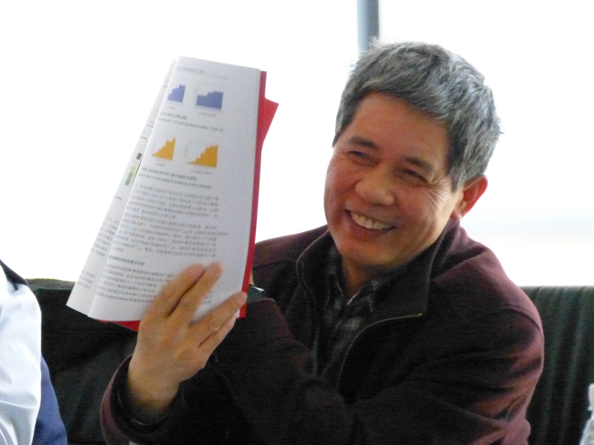
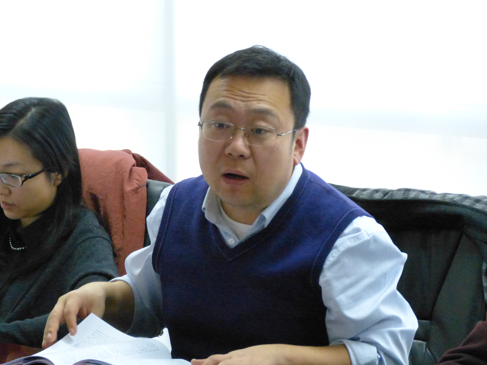
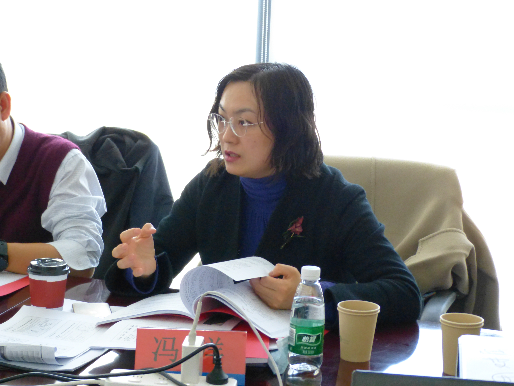

2023届毕业生预答辩成功举办！
发布时间：2023年3月1日
为提升学位论文撰写水平，助力学生毕业论文送审成功通过，3月1日下午，中科院信工所第二研究室举办2023届毕业生预答辩评审，评委组北京大学王厚峰教授（组长）、中科院计算所靳小龙研究员、北京航空航天大学张日崇教授、中科院计算所冯洋研究员、中科院信工所王蕊研究员为学生论文提出宝贵意见。会议由中科院信工所曹亚男研究员主持。

会议现场
出席专家详细了解了学生的答辩主题，听取了学生的答辩汇报，研读了学生的论文成稿，从结构、用词、立意、创新点等方方面面向学生提出了修改意见和建议。

北京大学王厚峰教授点评学生论文

中科院计算所靳小龙研究员点评学生论文

北京航空航天大学张日崇教授点评学生论文

中科院计算所冯洋研究员点评学生论文

中科院信工所王蕊研究员点评学生论文
预答辩学生导师中科院信工所胡玥研究员、周晓飞研究员、柳厅文研究员、曹亚男研究员出席会议。